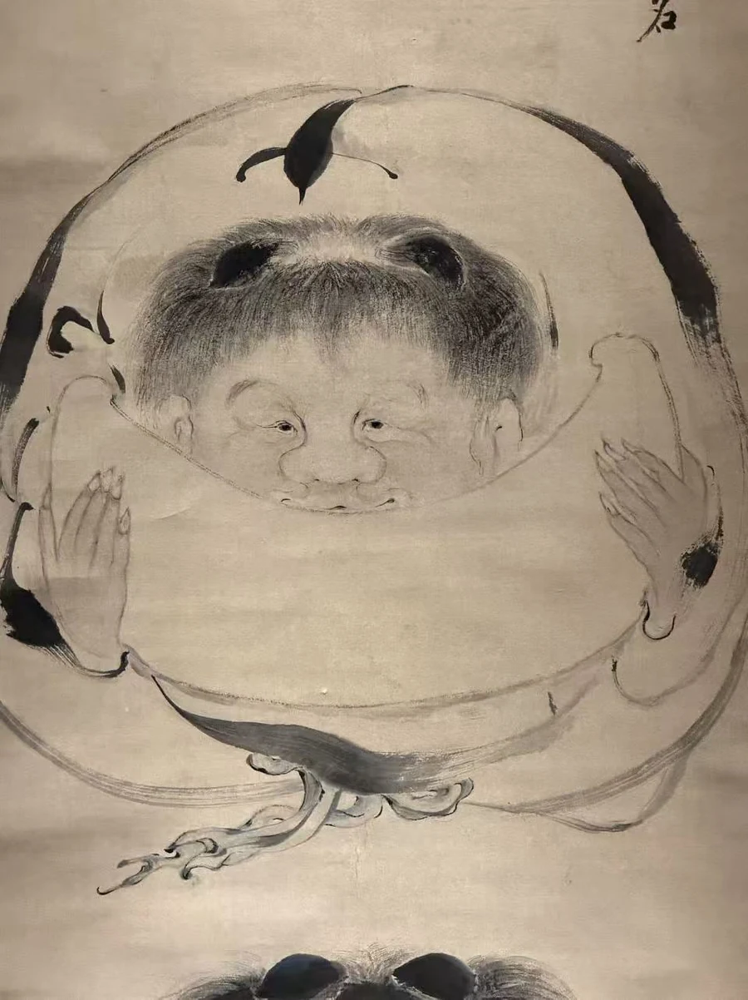
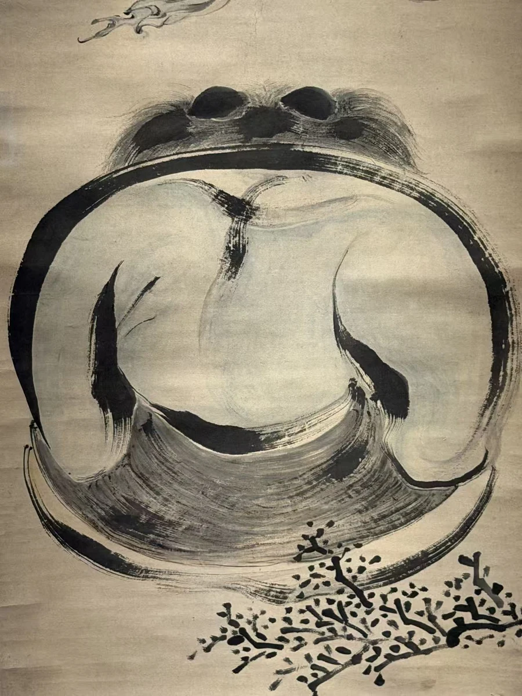

画前细读
先看上方寒山的脸。头发由细密短线铺开，眼睛、鼻翼和嘴角只占很小的地方，却把神情留了下来。双手扶着展开的卷子，手指画得纤细；包围头部与衣身的墨线则忽然加重，又在转弯处变淡、断开。脸与手的细致，使外轮廓的粗放有了可以停留观看的中心。

拾得把背朝向我们。肩背外缘的一道浓墨弧线，与上方寒山的圆弧相应；衣身下部的宽笔留下深浅不齐的墨痕，纸色从笔触间透出。画家没有另给拾得一张表情丰富的脸，倾听的姿态就落在这团向前收拢的背影上。扫帚在右下方斜伸出去，散开的枝条让紧凑的构图稍稍舒展。

馆方将这一刻解释为寒山读出自己的诗，拾得在旁专心听着。寒山与拾得的传说与中国天台山及禅宗传统相连，在日本分别称为Kanzan、Jittoku。诗卷指向寒山的诗人身份，扫帚联系拾得在寺院中的杂役生活；两件日常物品，也成为辨认这对人物的线索。 [1]
池大雅是18世纪日本南画、即文人画传统的重要画家。京都国立博物馆把他与与谢蕪村并列介绍，并讨论中国画谱对其创作的帮助。把这件作品放进禅宗书画的阅读路径，也能看到文人画家如何接近禅门题材：诗、聆听与带着诙谐的身形，共同构成了两人的相伴。 [2]
再与本站蕪村的双幅《寒山拾得图》并看，两位画家都以正面和背影相互呼应。蕪村把两人分置左右，拾得的大帽子参与了身形的变化；池大雅把他们收进同一窄幅，上下两个圆弧让视线往返。题材相同，人物之间的距离、笔触与空白，却各自安排出不同的节奏。 [3]